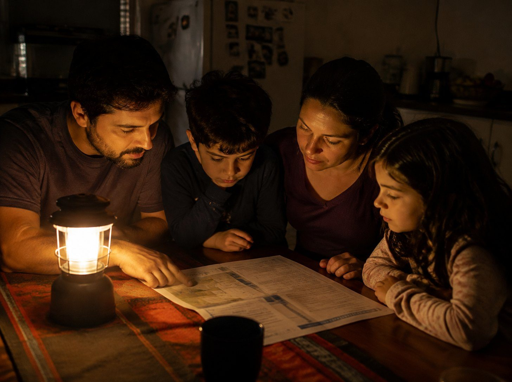
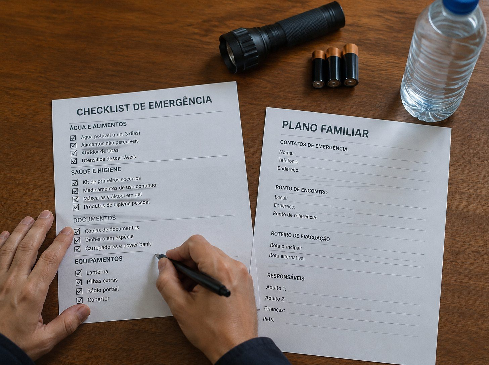

Os boletins do Painel El Niño, com dados do INPE, apontam chuva acima da média no Sul e abaixo da média no centro-norte do país.
Desde outubro de 2025 o Defesa Civil Alerta funciona em todo o Brasil e toca mesmo com o celular no silencioso.
A Comissão Europeia pede que cada família tenha suprimentos para pelo menos 72 horas de emergência.
O alerta avisa do perigo. Ele não ensina o que fazer depois. Este manual ensina.
?a luz acabasse por três dias?
?a água da torneira ficasse imprópria para beber?
?o mercado fechasse e o gás acabasse?
?a internet caísse e você precisasse pedir ajuda?
Nossos avós sabiam. Tratavam água, guardavam comida sem geladeira, acendiam fogo e plantavam o que comiam. Esse saber foi esquecido, e é ele que faz falta quando o alerta toca.


✓Famílias com crianças, idosos ou pessoas que tomam remédio todo dia
✓Quem mora em região de enchente, seca ou falta de luz frequente
✓Quem mora em apartamento e acha que não tem espaço para se preparar
✓Quem quer economizar e depender menos do mercado
✓Quem quer aprender técnicas que os avós usavam e ninguém mais ensina
✓Manual completo em PDF com 80 páginas
✓41 ilustrações passo a passo
✓8 receitas com ingredientes da despensa
✓Checklists mensais e trimestrais para imprimir
✓Plano da família, ficha de saúde e página de contatos
Pagamento seguro · Acesso imediato por e-mail
7 dias de garantia. Se não gostar, peça o reembolso dentro do prazo e você recebe seu dinheiro de volta.
Prepare sua casa em um fim de semana. Leia hoje, pratique com a família e tenha tudo impresso na porta da despensa.
GARANTIR MEU MANUAL POR R$ 19,90 →Este manual é educativo e não substitui as orientações da Defesa Civil, do Ministério da Saúde ou de um profissional. Em uma emergência, siga sempre o alerta oficial e ligue 199 (Defesa Civil), 193 (Bombeiros) ou 192 (SAMU).
© 2026 Saberes Esquecidos. Todos os direitos reservados.